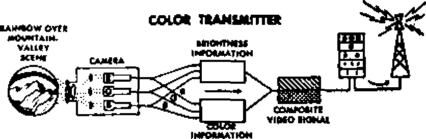

A shocking account of religion’s participation in war
How does it work? What will it mean to you? ---------»» »»------
The Australian aborigine’s intelligence, subjugation and present plea
t Is submission unjust?
JANUARY 22, 1954 semimonthly
THE MISSION OF THIS JOURNAL
News sources that are able to keep you awake io the vital Issues of our times must be unfettered by censorship and selfish interests. "Awake!” has no fetters. It recognizes facts> faces facts, Is free to publish fecta. It Is not bound by political ambitions or obligations; it is unhampered by advertisers whose toes must not be trodden on; it is unprejudiced by traditional creeds. This journal keeps itself free that it may speak freely to you. But it does not abuse its freedom. It maintains integrity to truth.
MA wake 1” uses the regular news channels, but is not dependent on tiiefiL Its own correspondents are on all continents, in scores of nations; From the four corners of the earth their uncensored* on *tii£-scenes reports come to you through these columns. This journal's viewpoint is not narrow, but Is international. It is read In many nations* in many language, by persons of all ages. Through its pages many fields of knowledge pass in review—government, commerce, religion, history, geography, science, social conditions, natural wonders—why, its coverage is as broad as the earth and as high as the heavens*
"Awake!” pledges itself to righteous principles, to exposing hidden foes and subtle dangers, to championing freedom for all, to comforting mourners and strengthening those disheartened by the failures of a delinquent world, reflecting sure hope for the establishment of a righteous New World.
Get acquainted with “Awake!” Keep awake by reading “AwakeI”
Published semimonthly Bt WATCHTOWER BIBLE AND TRACT SOCIETY, INC. 11T Adama Street Brooklyn lt N. U- f A.
N. H. FmUtfH Grant fieoreton#
Printing this issue: 1,200,000
Lin|*H* fn wMrt thH h vifelhHdi
EkHiiMQthly—Afrikaans. English, Finnish, French, Gdnan, Hollandiah, Nocwesiazi, Spanish, Swedish, Monthly—Danish, Greek, Portuguese, Ukrainian,
Offices Yearly auhscriptlon Rate
Auric*. U.S.. 117 Atlaw st., Brooklyn 1, N.Y. Si AUtraHa, 11 Beresford Bd., Strntbfleld, NS, SV. As CSMSa* 40 Inrin Are., Toronto sr Ontario SI England, 34 Craven Terrace, Undcm, W. 2 Tt Stith Africa. Private Bag, P.O. Elandrfcntein,
Transvaal Tt
Xottrnd at Meusd-tiatB inAilw at Brooklyn., y.
Five cents a copy
Rcailttiincef should be aeot to office id your country In compliance with refutations to guarantee safe delivery nt money. Remittances are accepted at Brooklyn trcun countries where no office U located, by international money order only. Subscription rates in different countries art here stated tn Ictal eurnutf. at tiplfiilon (with renewal blank) is sent at least two issues before subscription ex-plree. Change of addreu when sent to our office may he expected effective within one month. Send your old as well as new address.
Aft at March 3, 1879. Printed in U. 8. A
CONTENTS
World Peace by a Return to Religion? 5 The Plight of Australia’s Outcasts
How a Picture Is Created
' 'The First Truly International Ma g azine' * 16
Early Borinquens of Puerto Rico I7
"Your Word Is Truth"
Jehovah’s Witnesses Preach
"Now it is high time to awoke?’ A' —Roman* 13:11
volume XXXV
Brooklyn, N> Y., January 22, 1954
Number 2
Civilization-
CCrpO CIVILIZE” means to cause to come 1 out of a savage or barbarous state. Hence "civilization” should be the very opposite of barbarism and should have education, culture, refinement, justice and truth as its very core. A look at the modem world, however, causes one to reflect on the arresting question: Is civilization really civilized? To phrase it differently, is the world’s civilization just a veneer? Provocative questions these! For since 1914, in particular, civilization, instead of elevating mankind to a sublime level of morality and integrity, has shown a glaring degeneracy, a downward trend.
Look beyond the mechanical marvels of the age. Look deeper and we find so many trouble spots in the world that we grimly realize we have been passing up a few here and there, to preserve a little peace of mind. If this world has a veneer of civilization, it is very thin, especially when the spirit of discontent prevails earth-wide. In government, coups are hatched, revolutions are launched with great frequency. How poignantly is reflected the spirit of discontent by the rising rate of suicides in civilization! Just as sad is the vast number of mental cases, insanity being used more and more as “defense” in court trials.
What is civilized or cultured about the global mob violence? Is not the ruling regime of some nations powerfully influenced by mobs? And what is refined
-Is It Real?
about nations of people that lack will power and self-control? Drug addiction flourishes, a recent wave having gnawed at the very heart of the United States. Alcoholism afflicts the world. Authorities in France are alarmed at the high rate of alcoholism in that country. What is there cultured about civilization’s skid row, its derelicts of humanity that have abandoned themselves to dissipation? What is there good-mannered or refined about the gruesome slaughter on American highways, over 30,000 yearly dying unspeakable deaths? Civilization has failed to strengthen will power. Recently, officials, trying to formulate more stringent laws against,obscene and lewd literature, had to admit that they did not dare publish a list of the objectionable books. Why? For fear of stimulating their sale!
What is civilized about the masses that succumb to hero worship? It is not only the modem civilization of the Communist world, with its Stalins and Lenins, that sets the example, but the Western world does too. After General MacArthur’s address to Congress in April, 1951, Representative Dewey Short, one-time Rhodes scholar who studied at England’s Oxford University, declared: “We heard God speak here today, God in the flesh, the voice of God.” Men become gods in today’s civilization; people, as the Bible foretold, ‘venerate and render sacred service to the creation rather than the One who created.’ (Romans 1:25) What is right about that and the world’s tendency to discredit the Bible? The modern educated child admits himself that he only “half-believes” the Bible. Civilization’s “modern thinkers” turn to the evolution-teaching, anti-Bible scientists and psychologists for light. They get darkness instead.—Isaiah 60:2.
What is civilized about a world with an unchecked blight of crime? Robbers and thieves, even with civilization’s locks and keys, make living harrowing. And what product of civilization is so appalling as juvenile delinquency? The situation is acute: “The Federal Bureau of Investigation, for example, warns that a crime crisis may soon develop. If teen-agers and young adults of years ahead commit crimes at the same rate that offenses are now committed by those age groups, history’s greatest crime wave will appear.”—U.S. News <£ World Report, September 11, 1953.
What is civilized about the world’s divorce rate, its marital breakdown, its endless streams of refugees, its headaches? Sir Philip Gibbs, a British author, declared: “No man unless he is drunk with optimism can deny that the world is very sick, and it may be a sickness unto death.” The world's illness is reflected by the nervous breakdowns. “A marked increase of brux-ism—an unconscious side-to-side gnashing and grinding of the jaws,” was reported by the New York Times of December 10, 1952. Psychologists, said the Times, ascribe the bruxism increase to the stress of modem living aggravated by anxieties generated by world conditions.
What is cultured about the world’s greed for money that brings about corruption in government, wicked profiteering and black markets? Reading an account of ancient Rome sounds like reading today’s newspaper. Says Lord’s Beacon Lights of History: “(In Rome] the leading spring of life was money. . . . Everyone was valued for what he had, rather than for what he was.” So it is today. And the people who criticize others for judging according to caste are often the very ones who judge their neighbors by their cash! Caste system or cash system, where is the refinement?
Where is truth when the so-called “Christian civilization” teaches such false doctrines as immortality of the soul and trinity, doctrines that hark back to ancient Egypt and Babylon? Have not the religions of civilized nations in effect called God uncivilized, savage, a fiend and a receiver of bribes, when they insist that he runs establishments such as a hell of eternal torment and purgatory?
It has been said that war is a relic of barbarism. It would seem, then, that modem civilization is more barbaric than the barbarians ever were! For the two most colossal wars ever fought were products of “Christian civilization.” Today the nations have more diabolic weapons of mass slaughter than the barbarians ever dreamed of.
Tom off is the veneer, exposed to sight is the world’s rotten core. Why rotten? Because Satan the Devil and his demons are the “world-rulers of this darkness.” (Ephesians 6:12, New World Trans.) So true Christians do not try to patch up the old-world civilization; it is beyond patching. God has promised something new—a whole new world! (Isaiah 65:17; 2 Peter 3:13) Already a New World society is formed. Jehovah’s witnesses are announcing the good news of this new world and the end of the old-world civilization. (Matthew 24:14) This generation will see the modem world’s veneerlike civilization pass away and an enduring, righteous, yes, real new world established by Jehovah. Which will you live for? Now is the time to decide.
World Peace by a Return tojfcligion?
HO or what can bring about a world peace? Peace ostensibly is the objective of the United Nations and yet that august body has not succeeded in removing the threat and fear of atomic war. Noting this failure, Our Sunday VisitorSeptember 13, 1953, an American Catholic weekly, under the heading “It Is Time to Try Religion,” editorialized, “the failure of every attempt to prevent wars and restore peace [is] because the leaders of the nations have failed to consider religion?’
Is that the reason why this globe has seen so few years of peace during the past nineteen centuries, namely that the rulers have failed to consider religion? Let us consult the pages of history.
The first of worldly rulers to consider the “Christian” religion was Constantine. Catholic historians point with pride to what he did for their religion, his acts not only giving it a legal standing but placing the church and its clergy in a preferred position; although he himself was not baptized until just a few days before his death.
No question about it, Constantine did what Our Sunday Visitor says rulers must do: consider religion, ma^it a ruatter of policy?" hut did his considering religion bring peace to the Roman empire or even to his own household? Far from it! From the beginning of his reign he was engaged in bloody, costly, ambitious wars with those holding other parts of the Roman empire, and his professed conversion to Christianity A.D. 312 did not cause him to change his course of action but merely provided him with another excuse to continue therein until he had taken over the entire empire A.D. 324. And not only did he engage in wholesale killing by war but also in private murder of his immediate relations. Among those whom he murdered
after he professed conversion to Christianity were a son, ajieptigw and his wife.
After the Council of Nice he proceeded to persecute Arius and his followers, who could not accept the doctrine of the trinity.
No wonder the historian says of him: “He was comparatively indifferent to slaughter, else he would not have spent seventeen years of his life in civil war, to be himself supreme?' not to say anything of his persecutions and private murders. Certainly history gives the lie to the contention of Our Sunday Visitor as far as Constantine, the first “Christian" emperor, was concerned.
Take the next shining light of “Christian” emperors, Charlemagne who was crowned by the pope a.D. 800. Regarding one period in his life the Catholic Encyclo* pedia states: “The next twenty years of Charles’ lift? may be considered as one long varfare?’ He fought the Saxons, converting them to “Christianity” at the point of the sword, and, all in all, Jed fifty-Jtbjee^ military expedition^ against tTie ^Eaxons, SafacehsT Lombards and others. Charles .....——• ✓
“the Great” (Charlemagne), like Constantine “the Great?’ had two loves: he loved to fight and he loved the clergy. Says the historian: “The most marked feature of his reign, outside of his wars, was his sympathy for the [Catholic] clergy?’ No question about Charlemagne’s having considered religion, but instead of that’s resuiting in peace it involved him in almost continuous warfare.
The Crusades
More than any other historical events the Crusades give the lie to the contention that by rulers’ considering religion peace will result. The Crusades were the result of Roman Catholicism’s adopting two pagan teachings: one, that by means of penance one can gain forgiveness of sins; the second, that a piece of ground becomes holy by reason of events occurring upon it. A fallacy, incidentally, that Jesus refuted in his discussion with the woman at the well of Sychar, wherein he showed that location mattered nothing, but what was important was to worship God with spirit and truth.—John 4:20-24,
Seven crusades were fought from the eleventh to the thirteenth century, being the outstanding events of the Middle Ages, They were often led by the greatest monarchs of the times, and pope after pope urged their prosecution and offered plenary indulgence to all who would engage in them. These crusades cost some five million lives, not to say anything of the misery and suffering they caused. There was also a “Children^ Crusade,” in which from fifty to ninety thousand children, not yet in their teens, were vainly sacrificed.
According to the historian Lord, they were “the most unsuccessful wars Europe, ever engaged in”; “wicked and most uncalled for wars of Europe"; “aggressive, useless, unjustifiable wars”; “their conduct excites our contempt.” “In one respect they were absolutely repulsive. The crusaders were cruel. They wantonly massacred their enemies even when defenseless. Sixty thousand were butchered in the fall of Jerusalem; ten thousand were slaughtered in the Mosque of Omar.” “When any city fell into their hands there was wholesale assassination. And they became licentious, as wen as rapacious and cruel. What few of them lived to return, morally poisoned the communities and villages in which they dwelt.”
Yet all this was done at a time when the crowned heads of Europe recognized the pope’s supremacy even in political matters, when rulers did consider religion. Depend upon religion for peace?
Religious Crusades Within Europe
The end of the bloody and futile crusades against the Moslems for control of the Holy Land saw the beginning of the crusades against the Albigenses in southern France, a peaceful and harmless people whose only crime was that of disagreeing with the pope. Hundreds of thousands perished in these attacks; in the city of Beziers from 20,000 to 40,000 were massacred, every inhabitant, the crusaders not even sparing Catholics loyal to the pope. Organized religion was the aggressor. Look to it for peace?
The fourteenth century saw organized religious wars against the Waldenses, which crusades lasted for several centuries, and in which hundreds of thousands lost their lives, those of both the crusaders and those crusaded against. These wars were so unjustified and ruthless that a number of European rulers were constrained to protest them to the pope. Says one authority: “Multitudes perished, victims of the severe storm of wrath poured out on their once peaceful homes.” As with the Albigenses the aggressor in the war against the Waldenses was organized religion. Look to it for peace?
Coming to the fifteenth century what do we find? Crusades proclaimed against the followers of Huss; those taking part were promised plenary indulgence, forgiveness of all their sins. Army after army marched against the Hussites, some of which armies numbered upward of a hundred thousand men, and, although greatly outnumbering them, they were defeated at the hands of the Hussites time and again. But when the Hussites were not fighting the pope’s crusaders they were engaged in cold and hot wars among themselves over the details of their religion. Religion a force for peace? Not in the fifteenth century!
Nor in the sixteenth century. It saw France tom by civil strife, Roman Catholic forces, representing two thirds of the nation, being determined to wipe out the Huguenot religion, held by about one third. Failing in their military expeditions against the Huguenots, they resorted to deceit and massacre, luring the flower of the Huguenot nobility and armed might into Paris for the nuptial festivities of the king under solemn oath of safe conduct, and then surprising them with sudden attack as the fateful tocsin tolled at midnight August 15,1572. For three days and nights the massacre continued, destroying 60,000 Huguenots, men, women and children. “A vulgar butcher appeared before the king and boasted he had slain 150 persons with his own hand in a single night.” Yes, “the worst horrors the mind can conceive were perpetrated in the name of religion,” in St. Bartholomew’s massacre.
The Seventeenth Century
Involving more destruction of property, more human misery and more loss of human life than the combined crusades of six centuries against the Turks, the Albigenses, the Waldenses, the Hussites and the Huguenots, was the Thirty Years’ War fought during the first part of the seventeenth century in Germany. Occasioned by the unspeakable cruelties of Ferdinand II, emperor of Austria, in his efforts to wipe out Protestantism in Germany, this war reduced Germany’s sixteen million to four million and set back the country a whole century. No less than
30,000 villages and hamlets were destroyed. The most infamous single act of the war was the destruction of Magdeburg, in which its entire population, 40,000, were massacred, because it had espoused the Protestant cause. None were spared, not even infants in arms. This was the saddest massacre in the history of Germany. It was one of the greatest crimes that a conquering general ever committed. History has no language to depict the horrors of that dreadful scene. Truly Ferdinand’s considering of religion did not augur peace for Germany, in that first half of the seventeenth century.
Louis XIV of France filled the latter half of that century with misery, and this also because of his considering religion. In his ambition for territory and power, in his friendship with the Catholic clergy, and in his persecution of non-Catholics he bears a striking resemblance to both Constant ine and Charlemagne. Successfully pursuing his schemes of conquest, he made his great mistake in annulling the Edict of Nantes at the instance of the Jesuits (which edict provided for religious tolerance in France), for thereby not only did he disenfranchise two million of his subjects, cause 200,000 to perish on the gallows, as galley slaves, etc,, cause 200,000 of his subjects to flee, including some of the ablest men of the nation, but thereby he also aroused the suspicion and enmity of surrounding nations so that he became involved in wars that proved extremely costly in men, money and territory lost. Louis XIV’s considering religion did not bring peace or any other blessing to France.
Down to Our Day
And what about the eighteenth century? Early in that century Pope Clement XI took the side of France in its war with Austria, resulting in the invasion of the
Papal States by the Austrian forces, thereby dealing a heavy blow, according to the Catholic Almanac (1951), to papal prestige. Note, not men, women or children suffered, but papal prestige suffered. Nor is it stated whether the war was justified in any way. In fact, the historian says of the greater part of that century that it “was filled with a succession of hateful wars, not one of which can be said to have a reasonable or just cause.”
The Catholic Almanac also confesses that neither the pope nor his counselors foresaw the French Revolution, which terrible uprising was as much a protest against spiritual tyranny as it was against economic and political tyranny. At the same time it was Catholic priests who played the dominating role in bringing it about and in spoiling their church. It was the Catholic priest Sieyes who, in the first place, urged that the Third Estate, the deputies of the common people, recognize themselves as the French National Assembly and ignore those representing the first and secopd estates, the nobility and the clergy. And it was a Catholic priest of noble birth, Talleyrand, who proposed that France solve its fiscal mess by taking over all Roman Catholic church property, to the value of some two billion (2,000,000,-000) francs. When priest Sieyes later complained about the National Assembly’s abolition of all titles, its leader, Mirabeau, answered, "My dear Abbe, you have let loose the bull, and now you complain that he gores you.”
Among the rulers who considered religion, to the hurt of both their subjects and the peace of the nineteenth century, was Ferdinand VII, who, upon his return and assumption of the Spanish crown (he had been imprisoned by Napoleon and released at that one’s downfall), suppressed the constitution, restored the Inquisition, revived monasteries, recalled the Jesuits, and so persecuted the liberals in Spanish politics that a revolution broke out, forcing him to re-establish the constitution and to cal] different men to his council.
Another nineteenth-century ruler to consider religion was Charles X of France, friend of the Jesuits, who attempted to shackle the press and ignored the voice of the people. A revolution seemed the only remedy. Veteran Lafayette, who had come to the help of the American colonies and who assisted the French Revolution until it got so violent that he himself was forced to flee, took the lead in forcing Charles X to abdicate, in July, 1830. And during the nineteenth century no rulers gave more consideration to religion than did those of Spain, but instead of this bringing peace to their peoples, it brought so much oppression to the Central and South American colonies that one after the other revolted and declared its independence of a church-state rule.
Coming down to the twentieth century, history records that the pope’s interests were so definitely on the side of the Teutonic powers in the first world war that a secret treaty was signed between Italy and Great Britain barring the pope from any word in the peace. After the war the Vatican made concordats with warlike Fascist Italy and Nazi Germany, which promised religion’s support to those regimes and their dictators in exchange for special favors.
The tenor and purpose of these can be gleaned from the one signed on August 27, 1953, with Franco’s government. This concordat provides that priests are to offer prayers daily for Franco and his government, in accordance with liturgical prescriptions; that the Catholic religion is the religion of Spain; that non-Cathoiics may engage only in private worship; and that Franco has the final choice in the matter of appointing bishops to fill vacancies.
In view of all the foregoing evidence, what hypocrisy, what distortion of the facts to say that peace depends upon the rulers’ considering this world’s religions!
Jehovah God by Christ Jesus will bring peace to this earth by dashing all warring nations like a potter’s vessel at Armageddon. Concerning this we read: “Come, behold the works of Jehovah, what desolations he hath made in the earth. He maketh wars to cease unto the end of the earth; he breaketh the bow, and cutteth the spear in sunder; hebumeth the chariots in the Are.” And the resulting peace will last as long as the moon endures—forever!—Psalm 46:8, 9; 72:7; Isaiah 9:6, 7, Am, Stan. Ver,
By “Awake!*’ correspondent in Australia
Almost ail books on ethnology rate the
Australian aborigine as -about the lowest there is on the human mental scale.
And usually,
by way of illustration, they point to their primitive way of life. Here was a vast country where opportunities for development and advancement existed, yet to its people even a garden was unknown.
It is true, the aborigine cleared no fields and planted no crops. He cultivated no pastures, built no fences, nor even anything in the nature of permanent dwellings. His life depended upon the wild food supplies drawn from the natural surroundings. He was a food gatherer, not a food producer. But is the mentality of a people to be measured entirely by its advancement or lack of advancement as a nation in world affairs? Or by the magnificence of its cities, or its planned agriculture? When we make comparisons would* it not be fair to acknowledge in the Australian native his keen intellect, bent and trained to cope adequately with the rather precarious circumstances of his existence?
The aborigine developed a science of hunting and food gathering that enabled him to live without agriculture. Agriculture was not necessary to him. And, moving about as he did, he felt no need of building cities and developing the complicated way of life that so occupies his white brothers. His people were carefree and happy. Today, looking at the political and economic strife and insecurity into which the white man’s proud “civilization” has brought him, who will say that the simple life of the aborigine was farther from perfection than ours?
With the forcible intrusion of the white man into his domains the aborigine had to make, or try to make, drastic adjustments in his life and thought As J. H. Sexton, president of the Aborigines' Friends’ Association, puts it in his Australian Aborigines: “The white man has completely shattered the whole fabric on which the native system rested; t^he loss of his hunting grounds, his ceremonials, ritual and sacred places has brought the aboriginal mental complexity so that he is in a maze and acts like a man lost in the bush.” He had to learn of such matters as “ownership” and “possession/’ because these things were all-important to the white man. Of course, he would not be taken too deeply into such matters lest he begin to wonder what was the legal basis for the white man’s "ownership” and "possession” of his own hunting grounds.
'White Man’s Invasion
Imagine the trials of the bewildered natives as the guns of the "Christians” helped them to remember that, now they were trespassers where once they had roamed so freely. Their laws and codes were shoved aside. White men helped themselves to native women, and bred a race of half-castes who fitted into neither white nor native society. Objects associated with their worship and legends were contemptuously destroyed in a spirit of ignorant sadism. Hunting grounds were pushed back to make room for the white man’s cattle and sheep. Soon the cost of the white man’s occupation of Australia became obvious. The aborigines were slowly deprived of almost everything they held dear. They were doomed to degradation as miserable outcasts in a country they had called “home.”
Speaking of their plight, Sexton quotes a Commonwealth report of 1920 as saying: "The aborigines of Australia have never been recognized as having any legal title to their tribal lands. The whole of the lands of Australia were constituted Crown lands, and under various Land Acts have been sold or leased by the Government to white settlers, but no provision is made for securing a portion of their tribal lands by the dispossessed natives.” Then he adds: “I think we shall have to admit that we have not treated them with British justice and fairness; sometimes we have failed to show even mercy to a disinherited race. We have taken this rich country from the natives and justice demands that we should do something more than give to them the crumbs that fall from the table.”
At present, particularly in West Australia, there are signs of an awakening by the natives to the prospects of improving their lot. They are objecting to the stringent laws that restrict them at every turn. 'They are insisting that they be considered part of the community. This movement was helped along by the publication in The West Australian, the state’s foremost newspaper, of a series of articles on the subject “prepared by natives and written by a native.” Some of the powerful and skillfully made points were these:
“Among other things we cannot claim the old-age pension, or the invalid pension, or the maternity or widow’s allowances if we happen to be l-64th on the aboriginal side of the true half-blood, that is, the person who is 50 per cent white or any other race and the other 50 per cent aboriginal. Silly, isn’t it? but not funny when you’ve been paying income tax all your life and then find, when you’re too old to work, that you can’t get what a white man, or any other naturalized person, is entitled to and may get whether he is a Christian or not.”—The West Australian, October 10, 1952.
The “great white fathers” of Australia, on the following day, read more as the natives argued their case. Said they: “It is not our fault that we are forced to live, as so many of us are living, in squalid huts and humpies on native reserves. That is your fault. You took away our land from our forefathers, all of it, and all you gave them in return was the ‘right’ to live on unwatered, unlighted, barren or swampy reserves always situated well outside the boundaries of your cities and towns. You did not teach our men to build houses and yet you criticized them for not doing so on land that was not theirs. You placed the reserves on or near sanitary and rubbish dumps, with no proper provision for cleaning our bodies and our clothes and then complained, publicly, that we were smelly and shabby.
“You taught your children to snub and shun ours at school and in the street, to call us ‘blackies’ and 'niggers’ and forbade them to play with us or associate with us out of school. You did these things and then added insult to injury by insisting that we be removed from the streets at sundown and sent back to the dark, dank reserves and then criticized our young people if they 'got into trouble.’ It may be significant that we are not sent out of town during the daylight hours when the shops are open and we have money to spend; the shopkeepers wouldn't like that, would they?
“We do not seek revenge, but we do seek a fair go,’ which all Australians demand and do not hesitate to turn their country upside down to get. We have soap, and use it; some of us also now have education, and we intend to use that, too, if it will help our people to get what is rightfully theirs.
"We do not want special dispensation from your laws, nor do we want special laws passed on our behalf. We do not want discrimination of any kind, favorable or otherwise, so long as consistency is observed in matters affecting our interests and welfare.”—The West Australian, October 11, 1952.
4 Brighter Outlook
The most earnest politician or writer cannot produce a lasting solution to the problem. Freedom for ajl mankind is in knowing truth. Jesus plainly stated: “And you will know the truth, and the truth will set you free?’ (John 8:32, New World Trans.} And the truth is setting free many of the Australian natives today. Throughout the land, and particularly in West Australia, we find them numbered among the congregations of Jehovah’s witnesses. There, like their white brothers, they soon learn to cast off unscriptural habits and beliefs and put Bible principles to work in their lives. Superstition, ignorance and moral laxity have been swept away with the broom of Bible truth. Even the home feels the impact of this Christian training, for these native Australians are, for the first time in their lives, building proper homes for themselves. They cherish the approval of Jehovah God as something very precious.
Here are the fruits of Christian training. These dedicated witnesses are no longer outcasts. Their eyes shine with “faith, hope and love,” as they take their place right alongside and level with their brothers from all nations to make up the “great crowd1’ now serving Jehovah, the Most High. Together, these all look to Him to rid the earth soon of all selfish, oppressive systems and replace them with a new world of righteousness, where “the wicked shall not be . .. But the meek shall inherit the earth; and shall delight themselves in the abundance of peace?-Psalm 37:10,11.
Choir Boys Bored by Sermons
In England the choir boys are getting bored by the clergy's sermons. In one church the vicar asked his congregation to provide them with books to read while he is sermonizing,, London's News Chronicle (September 4, 1953) printed part of the clergyman's request for books for choir boys: “Not the Deadwood Dick type of book, but not necessarily a specifically religious book. . , . The boys work very hard and perhaps sermons are not always interesting to them/’ But from the worried expressions coming from Christendom’s clergy regarding the apathy of professed Christians, apparently the grownups also find the sermons uninspiring.
COLOR INVADES TELEVISION
AGAIN color television has captured the attention of the public press, the radio industry, and the present and prospective owners of TV receivers. It was about three years ago when an abortive attempt was made to launch color TV on the troubled sea of an incompatible set of television standards. The attempt failed. As soon as the Federal Communications Commission gave approval a large segment of the radio industry balked at the proposal and refused to go along with an outmoded system. That, together with the Korean war, causing a claimed shortage of critical materials, temporarily relegated color TV to the status of a defunct dodo.
Today, color TV has emerged again, but this time with an up-to-the-minute set of standards, strictly electronic in every phase. On December 17,1953, the Federal Communications Commission approved this compatible color system. The new color TV gives evidence qf being generally acceptable to all concerned, government, industry, and the private owner alike. It will not make obsolete the 23i million presently owned monochrome (black and white) receivers, nor will it jeopardize the investment of millions in manufacturing facilities of such TV receivers.
So all feel quite happy in the belief that color TV will be available to everyone who can afford the higher cost of this entertainment luxury, without the concomitant evil of obsolescence such as accompanied the three-year-old set of standards.
The new system is hailed with enthusiasm largely because it is a compatible system. Also, the results achieved from innumerable tests under all conceivable present and foreseeable future conditions of TV transmission and reception proved to the
3 O
more than two hundred expert engineers assigned to the task of developing as perfect a system as possible that the new system is far superior to the former mechanical one. It is, in fact, the final product resulting from the pooling of the best that engineering hrains of all the major competing TV laboratories can produce in the present stage of the art. The perfection is such that competent observers acclaim it to be the equal of any color home movie, and, in many cases, superior to that of the cinema. Being compatible, presently owned monochrome receivers can enjoy, even with finer definition than before, all color broadcasts, but in black and white, without outlaying a single penny for gadgets to convert their sets, as was necessary under the old 1950 system. Also, if you happen to be one of the • small group fortunate enough to own one of the new color receivers costing anywhere from $750.00 to $1,000.00, you will be able to tune in on any monochrome transmission at will without any additional equipment.
Color television, what is it ? How can it be possible, for instance, for a person to sit by the fireside in the comfort of his home and at the same time enjoy the sight and the sounds accompanying the assembly of a group of people, say, a thousand miles away, yes, ten thousand miles away, in some distant part of the earth, and while so doing even behold the variegated hues of coloring associated with the scene? As recently as a hundred years ago even the
thought of such a possibility was but a daydream.
4 Camera Must Be at the Bead
of Every TV System
A television system is analogous to a long chain having many links. All the links of the chain must be joined in order for the system to operate* Moreover, there must be as many chains running from the head of the system to the receivers as there are TV receivers tuned in to a broadcast* An area being served by a transmitting antenna at its center may be visualized as a huge network of spiderwebs radiating out like the spokes of a wheel from the antenna to each and every receiving set in the area. When the proper electronic stimulus is applied to the transmitting antenna it energizes the entire network of webs, causing each receiving set tuned in to see the televised scene.
Television is possible only after a transformation has been made, the transformation of the scene into its electrical equivalent. Impossible! you may say* How can an electrical current be derived from a picture? But it is possible; it has been done, it is being done, and it must be done if one is to see by television. The seemingly impossible is performed by the camera that heads every television chain. The manner in which this amazing feat is accomplished stands out as one of the capital achievements of modern science. Consider how a TV camera works.
Suppose the scene to be televised is one having many colors. The camera, first of all, by means of a set of lenses, divides the scene into three basic colors—red, green and blue. Each one of these colors is sharply focused on the sensitized plate of its individual camera tube. The tubes are highly evacuated, and it is right here that the electron image is derived from the picture*
Examining the process in more detail, electrons are ejected from the surface of the sensitized plate (the photocathode), creating a charge pattern over the entire plate. The charge pattern is an exact replica of the optical picture, the charge being greatest for the light areas of the picture and least for the dark areas; hence, it is in fact an electron image of the picture. Electrical fields accurately positioned within the tube cause the electron image to be deposited on another plate (the target) located directly behind the photocathode* It is here that the final transformation is made whereby an electrical current is derived from the electron image, and which is subsequently amplified and transmitted to a receiver.
Having created an electron image of the picture on the target, it must next be changed into an electrical current and then be transmitted. To do so only one tiny ele
AM) WMH1 hOUtt
ment of the picture is transmitted at a time* It is done by dividing the picture image into thousands of imaginary checkerboard-like squares, then transmitting only one square at a time in rapid succession and in orderly manner until the entire picture has been transmitted.
This must be done at an exceedingly high rate; in fact, the whole picture image
JANUARY 22, 1954
13
is transmitted thirty times every second. That is why any motion contained in the picture is carried along with it. This marvelous feat is performed with the aid of an inertialess, pin-point beam of electrons or cathode rays shot out from an electron gun within the tube. It strikes the target at a tiny point area and as it swiftly moves along in horizontal lines it scans the whole target from top to bottom by sweeping over 525 lines. The scanning of the target causes the electron image on it to modulate the beam in precise unison with the dark and light portions of the picture. It is this modulated beam current that carries the picture to the TV receiver.
When the outputs of the green and blue camera tubes are combined with the red tube, every detail of color and motion contained in the picture will be embodied in that electrical current. Strange as it may seem to be, nevertheless, a picture can be transformed into its electrical counterpart.
One of the innermost secrets of television resides in the construction and manufacture of the “eye” section of a TV camera. The creation of an accurate electrical replica of a picture requires scientific technique of the highest caliber. The construction and manufacture of the all-important photocathode and target in particular, the parts similar to the retina and choroid of an eye, are secrets that are closely guarded by competing manufacturers. Their development represents years of time in experimentation and millions of dollars for laboratory equipment.
So far, the workings of television may seem to be very simple. Much more is required, however, before successful television can be possible. The exceedingly small electrical currents representing the picture must be greatly amplified; they must be transmitted to the receiver by any one of a number of ways, such as by radio, by coaxial cable, or by a radio relay system; at the receiver they must be amplified again and finally be retransformed back from an electrical current into a visible picture on a screen. All this requires a host of electronic gear in the form of power amplifiers, special TV antennas, synchronizers, timing pulses, picture tubes at the receiver, etc., etc., each element constituting a link in the huge TV chain.
Turning our attention to another link in the TV chain, consider the great importance of synchronization, that is, the importance of “painting” the picture on the TV screen at the receiver in exact unison with the way the camera tube at the transmitter scans the image. Each element of every one of the 525 lines scanned by the camera tube must be reproduced at the receiver at precisely the same instant as the camera sees it, and, mind you, this must be done at the rate of thirty full complete pictures every second. Also, keep in mind that the thousands upon thousands of TV receivers of the entire network that may be tuned in at the time must be accurately kept “in step” to within better than a millionth of a second before a successful TV picture can result.
The herculean task involved can now be better appreciated. It is done with electrons in the form of timing pulses. The camera, together with its associated equipment at the head of the chain, introduces a short timing pulse with each and every Une it scans, which, in turn, forces the picture tube at the receiver to “paint” each element in the same position and at the same instant as seen by the camera. Other controlling pulses also must be inserted at the camera end in order for a TV picture to appear in natural color. When all the controlling pulses are inserted along with the picture, the composite video signal requires a wide band of frequencies, a band six million cycles wide. All the information contained in the TV picture, including the sound and color, must be transmitted within this band of six megacycles, as authorized by the FCC.
How a Picture Is Created in Color by a TV Receiver
To many people monochrome TV is mysterious. Color TV is even more so. The heart of a TV receiver is the picture tube. To receive a picture in monochrome only one picture tube is required; to receive TV in color, either three picture tubes are required (one for each of the three colors), or the three must be combined somehow in one tube. Inventors are working feverishly on this vital element so as to simplify it to the greatest degree possible. A prominent manufacturer of TV receivers derives color by employing but one picture tube.
Electrons play the leading role in the painting of a picture in color on the TV screen. As at the camera, again the ubiquitous beam of electrons inside a highly evacuated tube constitutes the electronic paintbrush. This eerie wand of electrons is as the master hand of a fictitious artist, whose brush strokes paint the picture on the screen at the speed of lightning. Three of such electronic artists are required to paint the picture in color: one paints in red, one in blue, and the other in green. Each one is under the direct control of the master of ceremonies, the camera, at the transmitter miles away. Each artist moves in precise synchronism with the scanning of the picture as is done at the camera. But how, you may wonder, can three electronic artists paint in three different colors and not interfere with one another?
In order to produce a picture in natural color, the three basic colors of red, green, and blue must be blended in proper proportion. The colors themselves are derived from three specially prepared phosphors located on the flat surface of the picture-
JANTTAP.Y 9.9..
tube screen; one kind fluoresces (lights up) red wherever it is struck by a stream of electrons (such as is used by our fictitious artist), another kind fluoresces green, and another blue. These three phosphors are uniquely deposited in groups of three, each occupying a pin-point area of the screen and each color having a fixed geometrical location relative to the remaining two. The one and same geometrical pattern is maintained over the entire surface of the screen. Now that we have the phosphors and the three electronic "paintbrushes” at hand, it remains for us to control the motions of these brushes so that one will sweep over the red phosphors only, another over the green phosphors, and another over the blue phosphors. This control is accomplished by means of the timing pulses generated at the head of the chain and which control each of the electron guns built within the picture tube.
Remembering that the picture current varies in intensity according to the light and dark areas of the picture, the three electron beams in the picture tube likewise vary in intensity as they scan the screen in exact synchronism with the camera. As the intensity of the beam varies so does the fluorescence of the phosphors vary in brightness as the beams scan the screen. An integrated picture including every detail and in full color is the final result.
The new TV color standards as proposed for adoption provide for three carriers to transmit the complete televised scene. One carrier transmits the picture; another, the sound; and another (in a fixed channel relative to the other two), the color. The new standards specify a fixed position for each carrier and all are confined within a six-megacycle band width. By confining the color portion of the picture to a separate carrier, the new color system is highly compatible; this for the reason that re-75
ceivers may be constructed to either accept or reject the color carrier. Accepting it, a picture in color results; rejecting it, the picture becomes black and white.
Leading men of the radio industry freely predict that color TV is here, to stay, now that the new set of standards has been adopted by the Federal Communications Commission. Within a year color on a national basis may be expected for a few, gradually increasing during the years.
The few details of TV considered should reveal the highly technical nature of this modern invention. It is the product of many minds. While men have learned much about television through experimentation and theorizing, yet no man living today knows just why it works. For instance, the very source of television, the light itself, is still a mystery; no one knows what it is. The action of light as it impinges upon the pnotocatnoae, causing the ejection of electrons, is also a mystery; no man understands the mechanism, but can just theorize. The all-important electron, so small that it is beyond the power of sight even with the aid of the most powerful microscope—who knows what it is? No one. Why do radio waves spread out from a transmitting antenna and on what do they travel as they speed through space? No one knows. The facts are succinctly stated in the words of a prominent automotive engineer when queried about why autos run; laconically he replied, “They only run by the grace of God.” Quite true; no man knows why autos run. Not only autos, but television and a thousand other inventions created for the welfare of mankind operate only by the “grace of Jehovah,” the Creator. Man may know how; only Jehovah knows why.
“The First Truly International Magazine”
CLAIM has been laid to that title by the
Reader's Digest. That publication’s Sep- <» tember issue stated Its claim to international- < ► ity this way: “Fifteen years ago at the urging J [ of readers abroad, the Digest began to pub- * ’ lish editions overseas. Today the Digest ap- <> pears in twelve languages.” Also, English editions are prepared for seven other lands. ] j “This first truly international magazine," it < > said, "now covers the world.” J [
But it simply is not so! An individual ]’ wrote to the Digest, pointing out that for o some time prior to the Digest's first foreign- ! [ language edition in 194G The Watchtower had ]; been published in a number of languages in < > several countries. In 1904 this magazine was <! already' being published in six languages, o When the Digest’s first foreign translation came out in 1940 The Watchtower was avail- j [ able in English, German, Grpek, Hungarian, <> Italian, Polish, Russian, Slovak, Spanish and o Ukrainian. Also, at that time Consolation < ► (now called Awake!) was available in six o languages: English, German, Greek, Polish, Spanish and Ukrainian. * ‘8J Where the Digest now appears in twelve languages, The Watchtower, with a circulation of 1,800,000, Is in thirty-nine, including Clbemba, Cinyanja, Cl shona, Ibo, Ilocano, Malayalam, Pangasinan, Twi, Urdu, Yoruba, and all the standard languages in which the Digest appears, like Danish, Finnish, French, German, Japanese, Korean, etc. Awake! with a total circulation of 1,200,000 an issue, is in thirteen languages, from Afrikaans to Ukrainian. In view of all this, the letter to the Digest asked: “Can the Digest’s claim to be the first truly international magazine, quite an inclusive statement, therefore be true?"
‘S? The Digest replied: “Perhaps our statement should have been qualified to indicate that the Digest is the first general magazine to have world-wide distribution. The record of The Watchtower and Awake! is impressive indeed, but since these are specialized publications we neglected to consider them in setting forth our claim." The Watchtower and Awake!—it is somewhat of a general magazine—reach a wider scope than the world’s biggest magazine has done with commercial backing.
EARLY BORINQUENS OF PUERTO RICO
By “AwoktJ1* correspondent in Puerto Rico
LISTED as an archaeological finding is a simple primitive stone chisel or celt, some of which have found their way to museums, and behind whose making lies a tale of the life and strength of a people now long extinct—the Borinquen Indians.
The chief of the Borinquens was called ‘'cacique,” His home was the largest in the village. It contained their idols, figures of stone, wood, or paintings, which were called zemis, or spirits. In this home or temple, religious services were held involving elaborate ceremonies and prayers. The other homes of the village were not tents nor were they baked mud structures, but buildings of wood and cane stalks. All the little houses were arranged about a central enclosure, called a "plaza,” where games and festivals were held.
The Borinquens were of short stature, but muscular, with strong legs and feet accustomed to heavy underbrush and tedious mountain climbing. The bone structure of their heads was oddly flat-shaped, a trait of great beauty to them. At the birth of a son a mother would bind her son’s head. A board was placed against his forehead and one against the back of his head, which would squeeze it into a long narrow skull, causing the eyes to protrude. The flatter the forehead, the more protruding the eyes, the greater the promise of beauty for the youngster. The nose had to be flattened too, in order to widen the nostrils, and so great care was taken to crush it at birth. Long, coarse black hair on their narrow heads, either knotted on the forehead or tied securely in back, added to the strangeness of their appearance.
Chiefs, Weddings, Funerals
There were different grades of chiefs. The office was handed down from father to son, but in the event a cacique (chief) had no son, then the position was passed on, not to his brother, or his brother’s son, but to his sister’s son.
The cacique was always the important figure and life seemed to revolve around him. He was distinguished from the rest of the people by his manner of dress and adornment. Suspended from his neck was a symbol of his rank, a pendant made, of gold. He also carried a string of marble-like beads. On his head he wore a large open crown of very small green and red stones intermixed with larger white stones. Centered on his forehead was one large jewel, and suspended from each ear was a large plate of gold. He wore only a girdle for his clothing, consisting of the same workmanship as the crown.
His wife was similarly dressed, with the exception of rolls of cotton on each arm just below the shoulders and on each leg below the knee. His other wives, often numbering twenty-five to thirty, though
not favorites, were nevertheless given equal rights and the favorite had no superiority over them. They all lived together in one home.
At the death of a cacique, two of the wives, generally favorites, allowed themselves to be buried alive with their former lord. Other favorite wives sometimes voluntarily entered the grave and were buried alive. The rest were appropriated by the cacique’s successor.
Illness and death were greatly feared by the Borinquens. The dependence and trust they placed in their deceitful priests, or boii (serpents), who claimed to be able to assist them, was most pitiful. The duty of a priest was to consult the zemis (spirits) for oracular purposes and also to ask for aid for the sick and to assist them in peace and war. They also made offerings to the special idols in their keeping, performed secret rites for rain and the growth of crops, and were always the leaders in religious ceremonies and public dances. Most of their “work” was at night, at which time it was easier for them to use their methods of deception upon their gullible followers. The boii claimed not only that he had power to cure the sick, but that he was also capable of inflicting sickness on those whom he wished to harm. He often struck fear into a sick individual, stating he was ill because he had not prayed to his semi, or built him a temple, or given him food; thus the one who was ill, upon becoming well, quickly prepared food to place in the house of his god, so that he might feed upon it, or he built a temple, or offered special prayers.
When a diseased person asked for the aid of the boii, a little table was prepared for the priest beforehand and an offering of cassava bread for the evil spirit was placed on it. The boii entered the room carrying a piece of tobacco set on fire and found his place among the seats in the home. He placed the tobacco strip in his mouth and drew the smoke in and exhaled five or six times. During this process he would strike the ground several times with his left foot. Then he crushed the tobacco between his hands and scattered it into the air, at which time the devil was supposed to shake the home and appear in person answering all the questions put to him by the boii. The “devil” was actually a well-trained assistant of the priest. The “devil” would state that the disease the individual had was not mortal, so the boii and his assistant would press the affected parts of the body and pretend that thorns, pieces of bone, splinters of wood, and stone were removed. These things were supposed to be the cause of his illness. They moistened with their saliva the part affected and sucked several times, persuading the patient that by this means they were extracting all the venom that had been in his body.
When a patient died after being given a treatment by the boii the family of the deceased would try to determine whether the doctor was at fault. They gathered the juice of a certain herb, cut off some of the hair from the forehead of the deceased, and made a powder of it, then mixed the two. This mixture was presented to the mouth of the corpse for it to drink, then to its nose, constantly asking whether the doctor had given the individual the proper 'treatment. If the patient supposedly replied that the doctor had not done so, the doctor was seized and beaten until his arms and legs were broken, or his eyes were gouged out.
Hunting, Fishing, lioQt-building
The Borinquen, though favoring his cooked bread, fruits and roots, also fed on meat and fish. There were communal hunts at special times of the year. A certain area would be surrounded and the game therein
would be driven together by the use of fire and killed or captured. Fish were caught by means of a net or speared with weapons with shell or bone points. Portions of the game would be presented to the cacique or sacrificed to the gods before the rest was eaten. But never did they hunt or fish for sport or the pleasure of killing.
Fishing as well as expeditions to nearby islands necessitated the use of canoes that were skillfully built. Ignorant of the use of iron or any cutting instrument except that of stone, their ability to build a well-balanced vessel for one or two men, or larger sea-traveling canoes capable of carrying a hundred or more persons, was nothing short of amazing. They were proud of their canoes and displayed their pride in elaborate painted figures or the carved images.
What They Believed
Since mankind through instinct desires to worship someone or something, it was but natural that the Borinquen, with no source from which to draw Biblical knowledge, should turn to the fabrications of his own mind. He believed that a great spirit, or zemi, called Makonaima, made both the heavens and the earth. He planted trees and saw to it that they gave good fruit. That Makonaima became lonely because no living creature could be found in the entire world. One day he pondered over this predicament beneath a silk-cotton tree by a river. Then cutting a piece of bark from the tree, he cut it into small pieces and threw some of the pieces of bark from the tree into the air, which became large and small birds. Some of the birds had red feathers, some yellow, and still others blue, because, as the pieces flew through the air, they scraped some of the color from the sunset sky. Other pieces he threw into the water, these becoming large and small fish. He tossed other pieces to the ground and these became fat and thin men and animals.
Evil was supposed to have come into the world through the blunder of a young Indian named Maconaura, who daily stretched his nets across the river near his home. He found an alligator feeding on the fish in his net one day. Picking up his bow and arrow, he killed the alligator with one shot. Upon seeing a young maiden, named Aguanaita, weeping nearby, he decided to take her home to his mother, where she lived for several years. He fell in love with her, married her, and eventually took her home to her people. During all this time Maconaura did not know the alligator that he killed was Aguanaita's brother. Months of family discord passed, and finally the father of Aguanaita flew into such a rage that he thrust an arrow into Maconaura's eye and killed him. The people of both families became angry and fought against one another, with hatred growing and filling the hearts of each one. All nature then suddenly changed. The wind began uprooting trees, lightning flashed, thunder rolled. The animals sprang up and began to eat one another. Ever since then men and animals have fought and evil remains.
Juvenile as these beliefs may seem, the Borinquen sincerely believed in them. Despite their love for peace, wars with the Spaniards and oppression in slavery caused their downfall, and they finally died as a nation. Today, some of their blood still runs in the veins of the people of Puerto Rico, mixed with the blood of the Spanish, the Africans and other races, and many still retain the definitely Indian features and characteristics of their ancestors.
Yes, listed as an archaeological finding —a museum piece—but this simple primitive chisel, if having the ability to speak, could tell us much more than we already know about a kind and peace-loving people—the Borinquens.
Removing Stains
THE chance of soiling a garment is ever present. A little bit of “know-how,” when it comes to stain removal, can be of real help in cases of emergency. A few suggestions for the treatment of the commoner stains are listed below;
Axle grease, pitch, tar, road oil and asphalt are stains peculiar to the country and are all difficult to remove. Rub in petroleum jelly or lard to soften the stain, then sponge with one of the grease solvents, such as carbon tetra* chloride, gasoline, benzene, Stoddard solvent, etc* Repeat the treatment until the stain is removed*
Beer Is a common stain that can be removed by washing In a soapy water. If the colors are fast add a little ammonia* On white silk moisten the stain with hydrogen peroxide and then let dry in the sun* Rinse in water. On colors not fast to light, soak the stain in methylated spirits for a few minutes; then brush In cold dissolved soap to make a lather, let dry. Next brush until clean, then wash and rinse. If necessary, sponge stain with equal parts alcohol and water. Then pour glycerine on the stain and rub between the hands. Let stand for half an hour and rinse with water.
Blood can be removed by first washing in cold water and then with warm water and soap. If material is heavy, apply a thick paste of raw starch and water. Leave this until dry and then brush off* For obstinate stains moisten with methylated spirits and then wash and rinse.
Candy stains can be washed out in cold water. If the stain is stubborn, soak in heavy soapsuds about ten hours and let dry in the sun. On delicate washables sponge with warm water*
Carpet stains caused by coffee, tea or wine clin be removed entirely by vigorous rubbing with a coarse cloth. For grease spots on carpets or rugs use a grease solvent* Work with a brushing motion so that the stain is not rubbed into the carpet.
Coffee and tea spots can be removed by thoroughly washing the stain in hot water and soap* Place an obstinate stain over a bowl and pour boiling water through the fabric, holding the kettle about two or three feet high so that the water will strike the stain with force. If the stain persists try hydrogen peroxide and sodium perborate*
Egg spotfc should be sponged with cold water. If necessary, sprinkle a little powder over the spot* Work in well and let stand for a half hour. Rinse in cold water.
Fruit and berry stains must be treated immediately to be effective. Apply same treatment as with coffee. Do not use soap, unless stain is caused from citrus fruits* The same method applies for both cooked and fresh fruit and berry stains.
Grass stains can be removed with hot water and soap as in ordinary laundering. For non-washables sponge with alcohol mixed with two parts water.
Gum and gum spots can be treated by hard* ening the gum with an ice cube* When hard scrape the gum out of the cloth. This method is particularly good for heavy materials. On washable material soften the gum with egg white and then wash.
Ice cream should be washed out of the material with cold water, then washed anew with warm water and soapsuds. To remove the grease apply carbon tetrachloride. Nonwash-able materials can be sponged with carbon tetrachloride. Let dry and then sponge with cold water.
Lipstick is a common stain that cannot easily be removed. If the stain is dry rub lard into it, then sponge with carbon tetrachloride* If the material is washable, loosen the stain with glycerine and then wash.
Medicine stains should be treated the same as fruit stains.
Milk or cream stains are treated the same as ice-cream stains.
Paint marks should be looked after Immediately. If the cloth is washable, remove fresh stains with plenty of soap and water. If the stain has dried, soften it first by rubbing lard or oil into it. Next sponge the stain with pure turpentine, kerosene or carbon tetrachloride.
Perspiration stains are usually acid in nature. Wash the stain with soap and water and place in the sun to dry* Sponge delicate fabrics with distilled water. Perspiration from the armpits is alkaline in nature. Sponging such stains with diluted vinegar will help to remove them* Rinse the garment in warm water. For stubborn stains try a bleach.
A SOUND DEPOSITORY?
MANY people who spend their entire lives so greedily grasping for money
that they would never loan their neighbor a dime know practically nothing of the workings of the very banks in which they put their hard-earned wealth. They try to put out of mind the vague recollection that in the past banks have collapsed, for they know neither why it happened nor whether it could occur again. Has the monetary system proved worthy of the trust they put in it?
The early foundations of banking were laid in the pagan temples of ancient Greece and Rome. Having priests as bankers was not too satisfactory, according to W, A, L. Coulborn, professor of economics at Oglethorpe University, who suggests in his book A Discussion of Money that non-priestly bankers emerged “perhaps as a corrective to abuses on the part of those who could claim divine justification." During the Dark Ages banking almost ceased, and when it was revived in the Middle Ages it was again the ecclesiastical institutions (this time of Christendom) that guarded the monetary wealth.
Banking’s major development, however, came out of the custom of leaving money for safekeeping in the strongboxes of trusted merchants. Goldsmiths and silversmiths were especially equipped to provide this service. They gave receipts for the gold they stored, and since these receipts were easier for both buyers and sellers to handle than it was for them to go and get the gold, the receipts soon began to pass from hand to hand, just as the gold would have done. Each person who took a receipt in payment knew he could get the gold any time he wanted it, but the receipt was handier, so, generally, he just kept and spent it rather than bothering with the gold. With the passing of time the goldsmith became the banker and the receipt the bank note—a common form of money today.
Soon it became the custom to use a “draw note” (now called a check) that could be filled in with any odd amount that the owner of the gold wanted the banker to pay to another man. Thus, by the latter half of the seventeenth century both the bank note and the check were in general use.
As to the lending activity of banks, this had developed when the goldsmiths discovered that at no time did everyone want his gold at once. Using as security the large quantity of gold that was always idle in their vaults, they began passing out additional notes or receipts as loans and charging interest on them.1 They found that they could lend out receipts or notes for several times as much gold as they actually had, and their lending out extra receipts, since the receipts were used as money, had the effect of increasing the amount of money that was actually in circulation.
Governments early got their hand into this banking activity. Victor S. Clark says in his book What Is Money?: “These gold-
smith banks might have had a placid history had they kept free from government entanglements. Unfortunately, the goldsmiths developed the habit of depositing their surplus money in the Royal Treasury, withdrawing it as required to meet their engagements. In 1672, however, King Charles H [of Britain], being in need of ready cash, suspended payments from the Exchequer and took £1,328,526 of bank deposits for royal use. This resulted tn widespread ruin among the ten thousand depositors whose funds were thus arbitrarily seized.”
Early Failures
Not only was there danger from money’s being under the control of a government in need, but unwise lending by the bankers added to the ruin of many who deposited their money. For example, in England during the eighteenth century bankers were frequently inclined to lend too much to the farmers. When cattle disease broke out, or the price of wheat fell, the farmers would be unable to repay their loans. Other depositors would wonder whether the banker would lose so much that he would not be able to stand behind his notes. Mistrust would develop, and soon a "run” would be started on the bank; every noteholder demanding his gold, which, of course, the banker could not produce on such short notice. Unless he could get help from another banker, he would have to close. Sometimes unwise lending by one bank caused the destruction of every bank in the town.
In the early days of the United States banknotes were frequently unreliable because of the prevalence of this same unwise practice of issuing more notes than the bank could safely handle in an emergency. The National Banking Act in 1863 was designed to remedy this situation and to provide dependable currency. Only banks chartered by the federal government could then issue bank notes. Better banking and better money resulted, but even these banks were unable to weather the periodic panics. Their failures called for another reform, and the Federal Reserve Banks (bankers’ banks) were established in 1913-1914 to help individual banks survive when crises came. The controls they exercise and the authority they have is similar to that of the central banks (like the Bank of England) in other lands.
1933
Regarding this effort to strengthen the banking system, economist Robert B. Warren said, in lectures at Columbia University in 1940: “I think it is agreed that the original Federal Reserve Act was the most thoroughly studied, carefully deliberated, and painstakingly drafted item of legislation ever enacted by the United States Congress,”2 Yet, even with such safeguards, the hope that the government-directed Federal Reserve Board could soften, or even prevent depressions, was shattered in the crash of 1929. The inflationary stock market boom had been built on bank credit, and both the banks and their customers suffered heavy losses. Many people began to wonder about the solvency of their bankers. When distrust developed, they began to draw out their money. A “run” on the bank was started, eventually its supply of money gave out, and it had to close its doors.
As the depression deepened in the United States, millions were unemployed, the national income had fallen, prices were dropping, bankruptcies were widespread. Between 1930 and 1932 five thousand commercial banks—about 20 per cent of the nation’s total—failed. Fearful depositors withdrew large sums for hoarding. The
closing of one of Michigan’s largest banks, the Union Guardian Trust Company in Detroit, was such a blow to public confidence that on February 14,1933, the governor of Michigan closed the hanks for eight days. Every state in the union followed suit, and within three weeks the panic had so spread that a national bank holiday was decreed.3
The system had broken; confidence was gone. The people wanted gold instead of paper, or government-guaranteed bills instead of bank promises. Everyone had thought he could get gold for his money, but there just was not that much gold in existence. To prevent the complete exhaustion of the Federal Reserve Banks’ entire gold reserve, Congress suspended the convertibility of currency into gold, and made it a criminal offense for anyone to possess gold coin or bullion. The money system, instituted by the early goldsmith bankers, had broken at its most vulnerable point—the point where the people demanded that paper and bank promises be converted into something more tangible.!
Says the authority Kemmerer, on pages 124 and 125 of The ABC of the Federal Reserve System: “Perhaps the prestige of the banking profession had never been higher than it was in the 1920’s. Bankers were the pillars of respectability in almost every community. ... By the early 1930’s the prestige of hankers had reached its lowest ebb. . . . The worst suspicions of the public about financial men seemed confirmed by the criminal conviction of the head of the New York Stock Exchange and by the cross-examination before a Senate committee of the heads of the nation’s two largest banks. These gentlemen revealed an appalling lack of responsibility to public, depositors, or stockholders. And there was evidence in almost every community of the stupidity or even crookedness of some once-respected banker. All this does not prove that the bankers were less trustworthy than men of other professions, but it seemed so at the time.”
It is reported that as a result of the 14,809 bank suspensions between 1921 and the end of 1933, about one quarter of their $8.4 billion total deposits was permanently lost. One comedian brought many a wry smile in 1933 when he remarked that he had often had checks returned marked “No funds,” but that for the first time he got one back marked, “No bank”!
Safeguards Developed
Considering the magnitude of this collapse, it is little wonder that public clamor for protection of depositors prompted the U. S. Congress to give the banking system an extensive overhaul. The Federal Deposit Insurance Corporation was established, and through it the depositors in all but 930 of the nation’s 14,575 banks are insured for individual losses up to $10,000, The basic purpose of this federally sponsored insurance program is to give depositors confidence, so that panicky fears will not again prompt such disastrous bank runs. Further, drastic changes made in the banking arrangement from 1933
through 1935 restored confidence in the banks, strengthened them, removed some of the temptations to speculate, increased the Federal Reserve’s power over them, and increased the government’s control over the banking system.
Economists now believe that the causes of the 1933 bank failures have been removed, that the banks in the United States could meet any crisis that might occur. You can now cash in your bank account for paper money any time you wish. But this paper money, like paper money in other lands today, can no longer be converted into gold. The transition of money is complete, from gold, to paper that could be exchanged for gold, and now to paper alone.
Security has apparently been gained for us as far as the banks are concerned, but the security of our money has been weakened. You can get your money at any time, but that money's value may be less. This is what Warren is saying with the statement: “Since 1933 we have lost the security that went with the convertibility of currency into gold coin, and have gained the security that comes with the perfect interconvertibility of currency and bank deposits.”—The Search for Financial Security, page 14.
Whether government or private control of the banking system is best is a problem that has long plagued economists. When the banks go their own way they frequently gamble on a course that eventually leads to their failure; yet when the government is in control, as it now is in the United States, political expediency, leading to inflation, may in the long run prove just as dangerous. This is especially true in a country where the elected government is constantly being pressured to provide costly services for many "deserving causes," and at the same time to reduce taxes. The result is often an unbalanced budget, increasing debt, and pressures on the banks to take a course that will lighten the strain on the government, but which leads to mounting inflation.
Throughout the world today economic security is an elusive thing, because its foundation is not something firm, like the value of a piece of metal, but depends on the judgment of men—judgment which is of necessity colored by political considerations. “The whole course of economic history is the record of an unceasing search for security," explains Warren.—The Search for Financial Security, page 72.
Obviously money is a necessity, but equally as clear is the fact that its value can be destroyed. According to the Scriptures, both money and wisdom are a defense; but like all too many modem defenses, money’s value can be undermined. Depositing one’s money in a bank is far safer than trying to hide it at home, but no matter where you try to keep it, the Bible remains true when it calls the wealth of this present system “uncertain riches?' Its greatest uncertainty today concerns the ease with which its value can be destroyed through inflation—the subject of the next article in this series. It will show the wisdom of following the Bible’s principle, instead of trusting in such uncertain riches, to put your confidence in the only really sound depository, God’s service and his promises of life!
Riches and honour are with me; yea, durable riches and righteousness. My /ruit is better than gold> yea, than fine gold; and my revenue than choice silver. 7 lead in the way of righteousness> m the midst o/ the paths of judgment,
—Proverbs 811&20,
WORD
Woman—Her Scriptural Position
ERSONALLY many persons find it very convenient to dismiss the principles of the Bible as camel-train philosophy totally unSuited to this diesel-engine modem civilization. The corrupt judge persuades himself that what the Bible says regarding the need of judges to be “Godfearing, honest men, with an aversion to improper gain” is old-fashioned; the capitalist assures himself that what God’s Word says in condemnation of avarice and greed just does not make sense; while the clergyman shrugs off what the Scriptures have to say about the vice of hypocrisy.—Exodus 18:21, An Amer. Trans.; Matthew 23:1-33; James 5:1-6.
Likewise the feminist, woman agitator for equal rights, dismisses what the Bible has to say about the ‘head of every woman being man’ as just so much camel-train philosophy unsuited for our time. (1 Corinthians 11:3) According to her, woman has been unjustly relegated to a secondary position, and for her to accept it is to live a lie and act treasonably to her sex. Present foremost exponent of this position is Simone de Beauvoir, whose The Second Sex was reviewed in The Scientific American, April 1953, by Abraham Stone.
This feminist would have us believe that woman is not born a “woman” but becomes one by reason of the arbitrary circumstances and conditions forced upon her by man. Although admitting that the biological peculiarities of womankind make her life a series of “crises,” she contends that they have no bearing on the matter of equality, but urges women to resist man’s domination and assert their individuality.
However, the facts indicate that our feminist is indulging in wishful thinking. Discussing these very facts Dr. J. B. Rice, in Coronet, February, 1949, tells of a girl who was raised as a boy and yet responded in all tests involving the emotions exactly as other girls did. Women-act the way they do, “not only because of environment and training, but because their bodies and minds were feminine from the very beginning. Every one of the billions of cells that go to make up a woman are different from a man’s—so different that they can be distinguished under a microscope. And recently two scientists even went so far as to show that the chemical make-up of a woman’s brain is not the same as that of a man.”
And dealing with factors the doctor says regarding the physical aspects: “Although only about one-fifth smaller than men (six per cent shorter and twenty per cent lighter in weight), women have only a little more than half the muscular strength.” And mentally? From infancy through high school the girls exceed the boys in learning. “But then something happens and the boys pass them. Never again do women, as a class, become serious contenders in the intellectual pursuits. Their keen eyes are fixed on the inner world of people and personal relationships.” Obviously the Creator’s wisdom and not man’s arbitrary dictum is responsible for woman’s being “woman” and so different from man.
The logic of the Scriptural position of woman becomes apparent upon consideration of the principle of organization. The invisible hosts of heavenly creatures work together as God’s organization and are referred to as God’s wife or woman, He being the head and provider. Christ Jesus, in turn, is the head and husband of the body o( his followers, who are repeatedly referred to in the Scriptures as a bride or virgin. (Isaiah 54:5; Psalm 45:10-14; 1 Corinthians 11:3; 2 Corinthians 11:2) In each instance submission is indicated because of a secondary position.
The same is true even within the Christian congregation. The younger are commanded to be submissive to the older ones; individual Christians are told: “Be obedient to those who are governing you and be submissive, for they are keeping watch over your souls as those who will render an account, that they may do this with joy and not with sighing.” (Hebrews 13:17; 1 Peter 5:5, New World Trans.) Those whose duty it is to submit will gain nothing by chafing at this requirement.
The human family is also an organization. When Adam was alone there was no human organization on earth. But when Jehovah God took Eve from Adam’s side and then gave them the command, “Be fruitful, multiply, fill the earth, and subdue it; have dominion over the [lower animals],” then an organization was necessary. (Genesis 1:28, An Amer. Trans.) For Jehovah’s purpose regarding the earth to be realized, Adam and Eve would have to co-operate, and one of them would have to take the lead. Jehovah appointed and equipped Adam for that position or role.
That role is by no means an easy one, for man must not only be the provider and caretaker but also is under obligation to love his wife as he loves his own body.
(Ephesians 5:21-33) Of course, if the husband fails to show proper love it becomes more difficult for the wife to render deep respect, but that does not excuse her any more than the husband is excused from providing for his wife and loving her as himself because she fails to show him proper respect.
The dedicated Christian woman should not despise her position. As mother, wife, sister or daughter, hers is the privilege to wield a quiet, modest influence that can be powerful with man for good. Rebekah used feminine wisdom so that Jacob received the birthright to which he was entitled. Abigail smoothed over the churlishness of her husband Nabal and thus pacified David. Submissive Queen Esther used feminine tact in preparing her husband for the bad news she had for him, and as a result Haman’s plot was foiled and her life was spared as were also the lives of the rest of the Jews.—Genesis 27:5-29; 1 Samuel chapter 25; Esther chapters 3 through 9.
So today, the woman dedicated to Jehovah can, by means of tact and patience, get her point across, where principle is involved. She need not rebel and insist. She desires and needs her husband's love and to the extent that she plays the Scriptural role outlined for her, the better is the likelihood that she will be loved and cherished. Such conduct may do more good than preaching would to a husband who is an unbeliever—1 Peter 3:1, 2.
So the wise woman will not rebel at the secondary position that the Scriptures indicate for her. Appreciating the wisdom of Jehovah and the principle of organization, which latter involves the exercising of responsibility on the part of the husband and deep respect on the part of the wife, she will adapt her abilities to the sphere of relative freedom that God has indicated for her. Therein she will find her greatest happiness.
Jehovah’s Witnesses All the Earth
Preach in
Burma
BURMA, the land of golden pagodas. A land of fertile plains, dense jungles and natural resources* A land, not of milk and honey, but of oil and rice* A wealthy land, extending over an area of 250,000 square miles with only eighteen million inhabitants* But with all its assets and attractions, it is, ruefully, not a land of promise —at least not now.
Independence came to Burma only four years ago. But those four independent years have been long and hard. Insurrections blaze away on several fronts. Villages are burned time after time by war parties* Crime is rampant and the cost of living has skyrocketed* Disillusionment is everywhere* People are badly in need of comfort. Such has been life in independent Burma these past four years.
The Burmans are inclined to blame the country’s troubles on the hated foreigners or “expansionists,” as they are locally called. Others sarcastically charge God for conditions. They say, “If there is a God he must be getting weak or too old to do anything for us.” It is here among this “land of unbelief” that Jehovah’s witnesses are found quietly spreading their message of comfort to the people. Barriers are many, such as racial prejudice, a resurgence of nationalism and racialism and, too, a revival of Buddhism. There is a growing number of persons who entertain the idea that Buddhism will finally provide the solution to the world’s troubles* However, freedom of religion prevails.
Some of the more zealous Buddhists seize every opportunity to ridicule the Bible account of creation and try by dubious argument to refute the existence of God. Nothing seems to annoy a strong Buddhist more than mentioning God as the Creator. But even if Buddhism were the true religion, it would have an unhealthy effect upon mankind, because it removes purpose from life. It inculcates a negative attitude toward life and tends to make the individual self-sufficient, self-satisfied and indifferent to the needs of his fellow man. Their main difficulty appears to be to reconcile the idea of a loving God to the existing inequalities and abnormalities in this world*
To a large extent it is the orthodox “Christian” missions that are to blame for this antagonism of the Buddhists, Many Buddhists have had education in mission schools where attendance at religious classes was compulsory* These saw the many inconsistencies of Christendom’s religions. These inconsistencies created in the Burman a bias that is so deeply ingrained that it is almost impossible to overcome. Christendom’s missionaries labor under the delusion that they brought Christ to the “heathen,” but instead they rank among the leading causes for keeping Christ out of the minds and hearts of the people of the nations. This is a fact encountered daily by Jehovah’s witnesses as they endeavor to reach the Burmans with the Kingdom message. The Burmese Buddhists have been fighting for severed years now to put down a rebellion raised by the so-called Christian Karen National Defense Organization. This rebellion has added to their opposition toward anything that bears what is to them the odious name of "Christian.”
In spite of the fact that the bulk of the people in Burma are non-Christians, Jehovah’s witnesses usually meet with a kind reception. Indeed, having the door slammed in one’s face is an unusual experience, as European witnesses found to their pleasant surprise. More and more, though, as the recently launched “Back to Buddhism” campaign gathers momentum, indifference and even a definite refusal to discuss any other religion is manifested by the more advanced Buddhists. As yet, however, these people are very much in the minority. All of these differing circumstances require Jehovah’s witnesses to be alert and to be ready to use all their training to the fullest extent possible in order to be able to break down prejudice.
In the overcrowded, relatively up-to-date city of Rangoon, the good work of preaching the gospel of God’s kingdom has been carried dn without interruption for the past four years, not to speak of much education administered in prewar days. In Rangoon more than one hundred witnesses participate in the ministry regularly. Since the city contains people of a dozen nationalities the publishers carry literature in many languages. Outside the business section, few people read or even speak English, Burmese and Hindustani being chiefly used. Usually small huts built of bamboo and reeds have their doors open, but the larger houses built of wood or brick generally guard their doors with stout wire mesh or iron bars often padlocked because of the all-too-frequent dacoities (robberies). Burmese women will often become frightened when they see a European standing at their door, because to their mind the European stands for oppression and punishment. To speak with., them, many will quickly say, “I am a Buddhist and we have our own papers.” Others will invite you in and offer tea.
It is tragic that suspicion, fear and prejudice should so divide the human race. The new world will be a welcome sight where all will know that there is but one God, one redeemer, one religion and one remedy for human ills—the kingdom of Almighty God Jehovah.
KNOW?'
• What great mysteries of television are as yet unsolved? P, 16, 112.
• What false claim was recently made by the world’s biggest magazine? P. 16, 1f3.
• How Puerto Rico4s Boriuquens believed creation occurred? P. 19, 1124
• What caused the IL S. banking collapse of 1933? P. 23, ffl.
• What is the greatest uncertainty about today’s money? P, 24, 115.
• Why women act as they do? P. 25, IK
• How a wife finds greatest happiness?
P. 26, U7.
• Whom Burmans blame for their present troubles? P. 27, f[3,
• How "Christian” missions turned Burmans from Christ? P. 27, H5t
The Atom Pool
When President Eisenhower spoke before the U. N., he advocated an international pool of atomic materials to be used for the arts of peace. Unofficially Russia quickly said 'W to the idea. But later more responsible sources disclosed the Soviet Union agreed (12/21) to negotiate with the U, S. on control of atomic materials. Russia, however, asked for a world ban on atomic weapons, which the West has repeatedly re-fused to consider. It was believed that if Russia's acceptance is conditioned on the West's acceptance of a ban of atomic weapons little would result from the original proposal for an atom pool.
Color Television Approved
Two years ago the Federal Communications Commission approved the C.B.S. color system. This required the purchase of more equipment if existing sets were to receive color programs in black and white. To conquer this serious disadvantage an all-industry group, the National Television System Committee, set out to develop a system whereby existing sets would receive color programs in monochrome. They succeeded. So the Federal Communications Commis* sion reversed its decision on C.B.S. standards and announced (12/17) approval of the new specifications. Immediately manufacturers planned to tool up for production within six to nine months. But the chairman of the National Television System Committee explained: “It may be years before quantity production of color sets can be reached.” Major manufacturers said that their first color sets will have screens fourteen inches and under and will cost from $700 to $1,000. Regarding color, the magazine Changing Times., January, 1954, said: “You have never seen anything like color television. It outshines technicolor movies. It is more spectacular than the four-color ads and pictures in the slick magazines. So prepare to be astounded the first time you see it.” Was everyone enthusiastic over the marvel of color TV? Well, not everyone—at least not the theater owners!
Britain: Commercial TV
<♦> In contrast with American TV sets, British standard sets have only one control knob-^ for volume. There is no need for a “channel knob” as there is only one channel, and the viewer must take what comes on or else shut oil his set. This "no choice" system has Irked many British viewers. But the problem was how to add another channel without increasing cost to the government-owned British Broadcasting Company. The best solution seemed to be the selling of advertising space. But many were the complaints to this idea. Nonetheless Parliament voted to establish a new TV channel, the cost of which would be aided by selling commercials. The House of Commons vote (12/16) was 302-280 for commercial TV. Britons are hoping that their forthcoming diet of commercials will not be as heavy as that consumed by American TV viewers.
Star of His Own Trial
<$> Iran's military court trying ex-premier Mossadegh on charges of rebellion against the shah reached a verdict (12/21). To many people the verdict was that Mossadegh was the star actor at his own trial. For he lived up to his antic reputation. He wept. He expressed shock, horror and fear of assassination. He slept. He corrected the prosecutor's grammar. He regaled the courtroom crowd with witty sayings. He laughed at the court’s most damaging evidence. Once the aged defendant flexed his scrawny biceps and bellowed to the prosecutor: “I am both morally and physically strong, despite my age. If the prosecutor accepts my challenge I am prepared to wrestle him right here in court. I'll throw him on his back!” That was too much even for the chief judge, who burst out laughing. Despite his 72 years of age and his dramatics the court decided that Mossadegh could not be dismissed as a political clown. Because of a plea for leniency by the shah, the court's verdict was light: three years in solitary confinement.
Sudan: Union wKh Egypt?
The Anglo-Egyptian Sudan has been under joint British and Egyptian rule for more than fifty years. In 1952 Egypt declared the Sudan a part of Egypt. Britain proposed that this territory, more than one quarter the area of the continental United States, be made an independent nation. Cairo and London decided Sudanese elections would be held to choose a parliament, and then within three years a direct vote by the qualified voters could decide whether the Sudan would be linked to Britain or Egypt or he independent. When the parliamentary elections were held in December, Britain suffered a setback: The pro-Egyptian National Union party won 50 of the 97 seats in the lower house and 15 of 30 In the Senate. Egypt was exultant. However, observers felt that only when the plebiscite is held will it be known whether the Sudanese really favor a union with Egypt.
A Puzzled Pakistan
<$► Pakistan is a country of SO million Inhabitants, mostly Moslem. West Pakistan guards the Khyber Pass and the southern slopes of the Hindu Kush, route of most of the conquerors of India. In contrast with neutral India, Pakistan is stanchly anticommunist. Thus when Pakistani leaders asked the U. S. for military aid, Washington made plans to negotiate a military aid program with Karachi. This brought an outcry from India, To dramatize India’s opposition to the arms aid program, Prime Minister Nehru ordered his Congress Party machine to stage demonstrations in all of India. A party circular said: 'This policy [of arming Pakistan] should be condemned as dangerous tn world peace and to India.” Pakistani diplomatic and military observers meantime were puzzled over India's outcry. They said that New Delhi should be glad of the arms aid plan since its effect would strengthen India’s most vulnerable frontier. Analysts believed, however, that India’s dismay was caused by a fear of a Pakistani attack on Kashmir. Others thought India feared that the cold war might be brought to India’s borders. Pakistanis were puzzled at this, too, since they thought the cold war had already been on India’s doorsteps for years.
From 7 to 1,600 Miles an Hour
On December 17, 1903, Wilbur and Orville Wright made their first powered flight. The speed attained was only seven or eight miles an hour. Just a week short of the fiftieth anniversary of Wrights* famous flight, the world’s air speed record was astoundingly surpassed. A rocket plane called X-1A, built by Bell Alrcralt Company and piloted by Major Charles Yeager, flew more than 1,600 miles per hour. The previous record, set by a* Douglas Skyrocket (11/20), was 1,327 miles an hour. The X-lA’s 1,600-mile-an-hour speed was called by the U- S. Air Force the highest “known to have been attained by any aircraft dr any human being anywhere jn the world.”
Circling the Globe
<$> It was a stirring event when Nellie Bly in 1889 went around the world in quicker time than did a fictional character in Jules Verne’s Around the World in Eighty Days. For by using everything from ships to camel Nellie Bly made the trip in 72 days. Today an ordinary person can go around the world in an amazingly few hours. In December a new record was set for circling the globe in commercial airliners. Pamela Martin, making several stops, circled the globe in just 90 hours and 59 minutes.
What doea the future hold for speed? Well, new records are being set almost daily. If the Bell Aircraft Company’s X-1A rocket plane could fly for long periods of/time at 1,600 miles per hour, the pilot could circle the globe at the equator in fifteen hours, beating the sun by a considerable margin!
Impact of a Newspaper Strike
It seems difficult to believe that a 10-day newspaper shutdown in one city could affect the lives of so many people. But it did. When 400 photo-engravers, demanding wage increases, went on strike against six major New York city newspapers (11/28), another 20,000 workers refused to cross picket lines. Six Manhattan newspapers, with a daily circulation of about 5,* 000,000, had to shut down. The impact came quickly. Being without want ads, job-seekers were stranded. Theaters and department stores saw Christmas season business drop off. Newspaper handlers and railroad freight trains were without work. Ripples of the strike penetrated far beyond New York—into the north woods and the pulp forests in Finland, where newsprint logs are cut. Ship owners starved financially for lack of cargo; and news-hungry New Yorkers, accustomed to fat newspapers, found that bare-boned radio news bulletins were a starvation diet. When the strike ended (12/8) Manhattan newspapers had lost some $10,000,-000 in advertising. The first Sunday after the strike ended some 8,000,000 jumbo-sized newspapers went into circulation. The New York Times alone printed 1,300,000 of them, setting a new record in weight: each copy weighed five pounds! Thus just one newspaper for just one edition required 3,297 tons of newsprint from wood grown on 3S6 acres ot woodland. Once again the loggers of Finland were busy,
son died every nine minutes! Auto accidents on U. S. highways kill from 30,000 to 40,000 people every year. For the first eleven months of 1953, autos killed an average of 102 persons every day!
Indians Attack Trains
<$> In what sounded like a brief item from U. S. history of the early West, a report from a newly constructed railroad between Co rumba, Brazil, and Santa Cruz, Bolivia, told of attacks by Indians. This railroad, first rail link between Brazil and Bolivia, runs through a jungle region where the Yanaigua Indians have never had contact with white civilization. Upon seeing a train, the savages let fly a hail of arrows. Trainmen duck, for fear there may be some IndiAn William Tells. To meet the menace of Indian arrows, railroad officials decided (12/29) to issue firearms to train crews.
Rocket Plane Falls Ten Mlles
& When the news came out that Major C. E. Yeager had flown a Bell X-1A rocket plane at a speed of more than 1,600 miles an hour, it was not revealed that the plane had nearly crashed. Later, informed sources said that the rocket plane went out of control after it had climbed above 70,000 feet—thirteen to fourteen miles high. Whizzing along at more than two and one half times the speed of sound, Major Yeager lost control and the plane dropped nearly ten soulchilling miles. At about 20,000 feet pilot Yeager regained control. One government official said the pilot was living on borrowed time.
Man's Best Hope for Peace
A national public opinion poll conducted by Elmo Roper recently revealed that “73 per cent of the people in the United States feel their best hopes for peace rest in the United Nations.” (New York Times, 12/15) A review of history shows that a great number of people also hailed the League of Nations as man’s best hope. But the League, with its 54 nations, failed. In 1929 people again hailed the Kellogg-Briand Pact. Some 62 nations renounced war as an instrument of national policy. Within 15 years almost all were at war. In 1945 the U. N. was formed. Sixty nations agreed to outlaw war. Since then wars have started in Greece, Korea, Malaya and Indo-China. With the failure of peace pacts and peace organizations, how fortunate for man that Jehovah God will bring peace to this earth! Despite the 73 per cent of U. S. public opinion, Almighty God’s Word still says that the best hope, indeed the only hope for peace, is God’s kingdom by Christ Jesus, the “Prince of Peace.”—Isaiah 9:6.
165,829 People at Yankee Stadium Heat’d the Talk
AFTER ARMAGEDDON-'^ GOD'S NEW WORLD
WOULD YOU LIKE TO READ IT?
A copy of the talk is available in. 32-page-booklet form. You may obtain, a copy on a contribution of 5 cents, or have 7 copies for 25 cents. Write today for your copy and enjoy reading what 165,829 people applauded u’hen. hearing.
■— t •• 1 ■1 " ■■
WATCHTOWER 117 ADAMS ST. BROOKLYN 1, N.Y.
Enclosed Is □ 5 cents for 1 copy; □ 25 cents for 7 copies of the booklet After AririayeMon—God’s Neto World.
Street and Number
Name................................................................................................ or Route and Box ........................................................................
City.......................................... Zone No.........State........................................................................
FEBRUARY 8, 1954 31
"Our Father in the heavens, let your name be sanctified. Let your kingdom come. Let your will come to pass, as in heaven, also upon earth.” —Matthew 6:9,10, New World Trans.
The Bible study aid “New Heavens and a New Earth” clearly shows that the foundation for the prayed-for new world of righteousness has been laid. This 384-page book explains fulfillment of God’s promise to establish 'the new heavens and the new earth’ told of by Isaiah the prophet and referred to by the apostle Peter. Indeed, the Kingdom is at hand! For conclusive evidence that the Lord’s prayer is nearing complete answer and that soon God’s will through his kingdom will be donerin earth, send for this Bible study aid.
To obtain a copy of this al
rbing book, return the coupon below with a remittance of 50 cents. A copy of “New Heavens and a New
Earth” will be sent to you, postpaid, promptly.
WATCHTOWER 117 ADAMS ST, BROOKLYN 1, N.Y
Enclosed is 90 cents. Please send me the book “New Heavens and a New Earth”.
Name
Street and Number Of Route and Box
ClQr................................ Zone No( ........State ...
32
Says O’Hara in Mowey and Banking.- "A businessman-turned-bankor might have at hand £1,000 In the 'coin of the realm.’ Were he to lend the coin at 6% Interest, hts revenues from the loan would be £60 per year. If, however, he loaned his notes, and if he could be certain that not one note out of every four would be presented. for redemption in coin, he could lend £4.00o in notes and realize a revenue of £240 per annum.
SearcA for Financial Security, by Robert B. Warren, page 20.
The final stages of this amazing situation were graphically described by President George L. Harrison of the Federal Reserve Bank of New York (quoted on page 99 of J. R. Walker's Bank Credit As Money) i "We shall never forget the first three days of March in the Federal Reserve Bank of New York. On Wednesday, March 1st, In that bank alone, we paid out $51,000,-000 of currency to our member banks; on March 2nd it was $80 000,000; on March 3rd it was $176,000,000. On that last day, March 3rd, we also lost $87,000,000 through transfers of funds to other districts, and $78,000,000 through gold exports and earmarkings, Tn addition the public crowded into our bank corridors to withdraw gold. In those three days they carried off in bags, in suitcases, and in their pockets, over $100,000,000 in gold coin and certificates. The movement was cumulative. Each day was worse than the preceding one. This was a fear which would wreck any sort of banking system."
t Just as the early goldsmith bankers could not pay off all their obligations if everyone demanded his money at once, so in 1925 the monetary gold stock in the United States was only 15.8 per cent of the total number of dollars in circulation; in 1928, 14.4 per cent; in 1932, 20.3 per cent. According to The Economics of Afoftey and Banking, by Lester V. Chandler of Princeton University: "During the latter years of the gold-coln standard in this country—and somewhat the same conditions prevailed earlier—our total circulating media were between five and seven times as great as our monetary gold supply. Promises to keep all moneys re-deemable tn gold could therefore be kept only so long as there was no widespread demand for redemption.
What strange nervous disorder is on the increase? P. 4, Kz.
• Why Christians do not try to patch up the old world’s failing civilization? P. 4,
• On what false teachings the Crusades were based? P. 6, Hi,
• Who will bring peace to the earth? P, 9, H2.
• How the Australian natives* systems were shattered by the white man? P. io, H.
• What eloquent plea the Australian aborigines made in a leading newspaper? P. 10, US.
• Why the new color television system is being hailed so enthusiastically? P* 12, H4.
• How both black-and-white and color television receivers can pick up the same broadcasts? P* 15, U5.